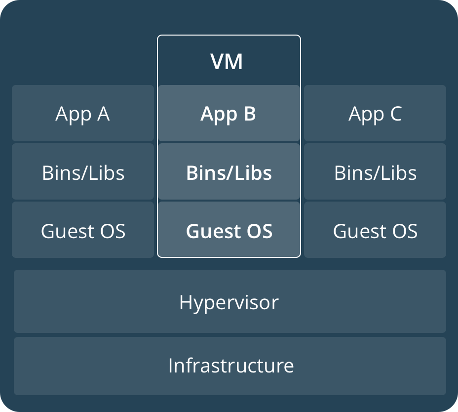

Docker Guide 101
Der simple Einstieg von Sascha Wolff.
Wer bin ich?
Freelancer und Softwareentwickler aus Düsseldorf mit Schwerpunkt JavaScript, Angular 4, Ionic 2 &
PHP.
www.saschawolff.de
Was sind Container?
Container sind eine schlanke und portable Möglichkeit, beliebige Anwendungen und ihre Abhängigkeiten zu verpacken und transportabel zu machen.
- Adrian Mouat
Was ist ein Container?

Docker ist performant

Container teilen sich einen Kernel und können schnell gestartet und gestoppt werden.
Container vs. Image
Ein Container ist eine Instanz eines vorkonfigurierten Images. Von einem Image kann man mehrere Container starten.
Das Mantra von Docker ist, dass in jedem Container nur eine Anwendung, im besten Fall sogar nur ein Prozess läuft!
Befehlsübersicht
attach Attach local standard input, output, and error streams to a running container
build Build an image from a Dockerfile
commit Create a new image from a container's changes
cp Copy files/folders between a container and the local filesystem
create Create a new container
deploy Deploy a new stack or update an existing stack
diff Inspect changes to files or directories on a container's filesystem
events Get real time events from the server
exec Run a command in a running container
export Export a container's filesystem as a tar archive
history Show the history of an image
images List images
import Import the contents from a tarball to create a filesystem image
info Display system-wide information
inspect Return low-level information on Docker objects
kill Kill one or more running containers
load Load an image from a tar archive or STDIN
login Log in to a Docker registry
logout Log out from a Docker registry
logs Fetch the logs of a container
pause Pause all processes within one or more containers
port List port mappings or a specific mapping for the container
ps List containers
pull Pull an image or a repository from a registry
push Push an image or a repository to a registry
rename Rename a container
restart Restart one or more containers
rm Remove one or more containers
rmi Remove one or more images
run Run a command in a new container
save Save one or more images to a tar archive (streamed to STDOUT by default)
search Search the Docker Hub for images
start Start one or more stopped containers
stats Display a live stream of container(s) resource usage statistics
stop Stop one or more running containers
tag Create a tag TARGET_IMAGE that refers to SOURCE_IMAGE
top Display the running processes of a container
unpause Unpause all processes within one or more containers
update Update configuration of one or more containers
version Show the Docker version information
wait Block until one or more containers stop, then print their exit codes
Hallo Welt
$ docker run debian echo "Hallo Welt"
Unable to find image 'debian:latest' locally
latest: Pulling from library/debian
06b22ddb1913: Pull complete
Digest: sha256:6ccbcbf362dbc4add74711cb774751b59cdfd7aed16c3c29aaecbea871952fe0
Status: Downloaded newer image for debian:latest
Hallo Welt
Es gibt drei Möglichkeiten, um Volumes zu initialisieren
$ docker run -it --name test -v /data debian
$ docker inspect -f {{.Mounts}} test
[{volume 8c10...12 /var/lib/docker/volumes/8c10...12/_data /data local true }]
FROM debian
VOLUME /data
$ docker run -it --name test -v /home/jonsnow/data:/data debian
$ docker run -it --name test --volumes-from webserver debian
Wie benutze ich Ports?
$ ID=$(docker run -d -P nginx)
$ docker port $ID 80
0.0.0.0:32769
$ docker run -d -p 80:80 -p 443:443 nginx
$ docker build
FROM ubuntu:14.04
MAINTAINER Sytse Sijbrandij
# Install required packages
RUN apt-get update -q \
&& DEBIAN_FRONTEND=noninteractive apt-get install -yq --no-install-recommends \
ca-certificates \
openssh-server \
wget \
apt-transport-https \
vim \
nano
# Download & Install GitLab
# If you run GitLab Enterprise Edition point it to a location where you have downloaded it.
RUN echo "deb https://packages.gitlab.com/gitlab/gitlab-ce/ubuntu/ `lsb_release -cs` main" > /etc/apt/sources.list.d/gitlab_gitlab-ce.list
RUN wget -q -O - https://packages.gitlab.com/gpg.key | apt-key add -
RUN apt-get update && apt-get install -yq --no-install-recommends gitlab-ce
# Manage SSHD through runit
RUN mkdir -p /opt/gitlab/sv/sshd/supervise \
&& mkfifo /opt/gitlab/sv/sshd/supervise/ok \
&& printf "#!/bin/sh\nexec 2>&1\numask 077\nexec /usr/sbin/sshd -D" > /opt/gitlab/sv/sshd/run \
&& chmod a+x /opt/gitlab/sv/sshd/run \
&& ln -s /opt/gitlab/sv/sshd /opt/gitlab/service \
&& mkdir -p /var/run/sshd
# Disabling use DNS in ssh since it tends to slow connecting
RUN echo "UseDNS no" >> /etc/ssh/sshd_config
# Prepare default configuration
RUN ( \
echo "" && \
echo "# Docker options" && \
echo "# Prevent Postgres from trying to allocate 25% of total memory" && \
echo "postgresql['shared_buffers'] = '1MB'" ) >> /etc/gitlab/gitlab.rb && \
mkdir -p /assets/ && \
cp /etc/gitlab/gitlab.rb /assets/gitlab.rb
# Expose web & ssh
EXPOSE 443 80 22
# Define data volumes
VOLUME ["/etc/gitlab", "/var/opt/gitlab", "/var/log/gitlab"]
# Copy assets
COPY assets/wrapper /usr/local/bin/
# Wrapper to handle signal, trigger runit and reconfigure GitLab
CMD ["/usr/local/bin/wrapper"]
Und was mache ich, wenn ich dann doch mal einen Port oder ein Volume ändern will?
Den Container löschen und den säuberlich dokumentierten docker run Befehl erneut ausführen!
$ docker run --detach \
--hostname gitlab.example.com \
--publish 443:443 --publish 80:80 --publish 22:22 \
--name gitlab \
--restart always \
--volume /srv/gitlab/config:/etc/gitlab \
--volume /srv/gitlab/logs:/var/log/gitlab \
--volume /srv/gitlab/data:/var/opt/gitlab \
gitlab/gitlab-ce:latest
Ernsthaft?!
Docker-Compose rettet uns
version: '2'
services:
gitlab:
image: 'gitlab/gitlab-ce:9.0.0-ce.0'
container_name: gitlab-ce
restart: always
environment:
GITLAB_OMNIBUS_CONFIG: |
external_url 'https://gitlab.example.com'
# Add any other gitlab.rb configuration here, each on its own line
nginx['listen_port'] = 80
nginx['listen_https'] = false
ports:
- '35332:80'
volumes:
- '/srv/gitlab/config:/etc/gitlab'
- '/srv/gitlab/logs:/var/log/gitlab'
- '/srv/gitlab/data:/var/opt/gitlab'
$ docker-compose up -d
$ docker-compose down
version: '2'
services:
nginx:
image: 'nginx'
container_name: nginx
restart: always
ports:
- '80:80'
- '443:443'
volumes:
- '/etc/nginx/conf.d'
- './nginx/vhost.d:/etc/nginx/vhost.d:rw'
- './nginx/upstream.d:/etc/nginx/upstream.d:rw'
- '/usr/share/nginx/html'
- './certs:/etc/nginx/certs:ro'
networks:
- proxy-tier
nginx-gen:
image: jwilder/docker-gen
container_name: nginx-gen
restart: always
volumes:
- './nginx.tmpl:/etc/docker-gen/templates/nginx.tmpl:ro'
- '/var/run/docker.sock:/tmp/docker.sock:ro'
volumes_from:
- nginx
entrypoint: /usr/local/bin/docker-gen -notify-sighup nginx -watch -only-exposed -wait 5s:30s /etc/docker-gen/templates/nginx.tmpl /etc/nginx/conf.d/default.conf
nginx-letsencrypt:
image: jrcs/letsencrypt-nginx-proxy-companion
container_name: letsencrypt-nginx-proxy-companion
restart: always
volumes_from:
- nginx
volumes:
- "/var/run/docker.sock:/var/run/docker.sock:ro"
- "./certs:/etc/nginx/certs:rw"
environment:
- NGINX_DOCKER_GEN_CONTAINER=nginx-gen
networks:
proxy-tier:
external:
name: nginx-proxy
VIRTUAL_HOST: something.example.com
VIRTUAL_NETWORK: nginx-proxy
VIRTUAL_PORT: 8080
LETSENCRYPT_HOST: something.example.com
LETSENCRYPT_EMAIL: postmaster@example.com

Beispiele
Nginx
$ docker run -it --name webserver \
-v /some/content:/usr/share/nginx/html:ro \
-p 80:80 -p 443:443 nginx:1.13.3-alpine
Oder als Dockerfile:
FROM nginx
COPY static-html-directory /usr/share/nginx/html
Jira
version: '2'
services:
jira:
image: 'cptactionhank/atlassian-jira:latest'
restart: always
volumes:
- './jira:/var/atlassian/jira'
- './logs:/opt/atlassian/jira/logs'
environment:
VIRTUAL_HOST: jira.example.com
VIRTUAL_NETWORK: nginx-proxy
VIRTUAL_PORT: 8080
LETSENCRYPT_HOST: jira.example.com
LETSENCRYPT_EMAIL: postmaster@example.com
X_PROXY_NAME: jira.example.com
X_PROXY_PORT: 443
X_PROXY_SCHEME: https
networks:
- proxy-tier
- jira
db:
image: mysql:5.6
restart: always
environment:
MYSQL_ROOT_PASSWORD: jira
MYSQL_DATABASE: jira
MYSQL_USER: jira
MYSQL_PASSWORD: jira
volumes:
- './data:/var/lib/mysql'
networks:
- jira
networks:
proxy-tier:
external:
name: nginx-proxy
jira:
driver: bridge
Backup to Amazon S3
docker run --rm \
-e ACCESS_KEY=myawskey \
-e SECRET_KEY=myawssecret \
-e S3_PATH=s3://my-bucket/backup/ \
-v /home/user/data:/data:ro \
istepanov/backup-to-s3 no-cron
Vielen Dank für eure Aufmerksamkeit!
Habt ihr noch Fragen?
Twitter: saschawolff1
Mail: sw@saschawolff.de